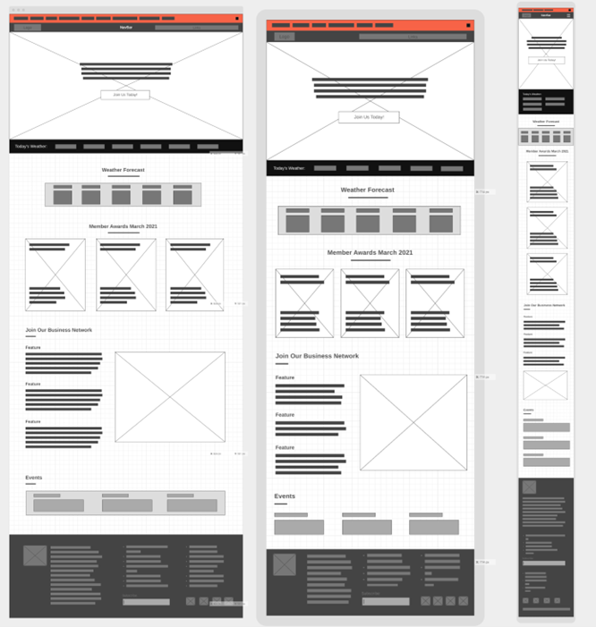

Target Audience
Our target audience are all businesses operating within our vicinity as well as investors.
Personas
| Photo: |  |
| Name | Daniel Washington |
| Job title | Meteorologist, NRA |
| Demographics: |
|
| Goals and tasks: |
He is intelligent, focused and goal-oriented. Spends his work
time:
|
| Environment: | He is comfortable using a computer and refers to himself as an intermediate Internet user. He uses email extensively and uses the web about 2.5 hours during his work day. |
| Photo: |  |
| Name | Kolaojo Francis |
| Job title | Virtual Assistant |
| Demographics: |
|
| Goals and tasks: |
He is intelligent, focused and goal-oriented. Spends his work
time:
|
| Environment: | He is comfortable using a computer and refers to himself as an advance Internet user. He uses email extensively and uses the web about 5 hours during his work day. |
Scenarios
- Emily decides to explore an e-commerce website that specializes in weather-friendly products and services. As she browses through the homepage, she stumbles upon a section titled "Weather Wonders."
- Can I get recommendations on what to where daily for the stock?
- I need help understanding the price. Is there someone that can guide me?
- As she proceeds to checkout, the AI pops up one last time
Wire Frame
